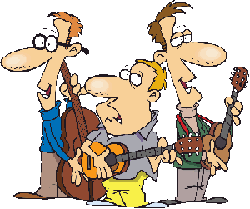

American folk music has many different genres including gospel, olde tyme music, jug bands, bluegrass, blues, Appalachian folk and many others. Folk music traces its roots back to the British Isles, mainland Europe, and Africa. Folk music is the ancestor of rock and roll, rhythm and blues, and jazz. We're not Elvis or B.B. King, but their music is built on top of ours. We're not cool or hip, but we are inspirational! Come on in and sit a spell and let me tell you all about folk music instruments. Click on the panels below and I'll tell you about that instrument.
Accordions (from 19th-century German Akkordeon, from Akkord—"musical chord, concord of sounds") are a family of box-shaped musical instruments of the bellows-driven free-reed aerophone type, colloquially referred to as a squeezebox. A person who plays the accordion is called an accordionist. The concertina and bandoneón are related; the harmonium and American reed organ are in the same family. The instrument is played by compressing or expanding the bellows while pressing buttons or keys, causing pallets to open, which allow air to flow across strips of brass or steel, called reeds. These vibrate to produce sound inside the body. Valves on opposing reeds of each note are used to make the instrument \'s reeds sound louder without air leaking from each reed block. The performer normally plays the melody on buttons or keys on the right-hand manual, and the accompaniment, consisting of bass and pre-set chord buttons, on the left-hand manual.
A mandolin (Italian: mandolino pronounced [mandoˈliːno]; literally "small mandola") is a musical instrument in the lute family and is usually plucked with a plectrum or "pick". It commonly has four courses of doubled metal strings tuned in unison (8 strings), although five (10 strings) and six (12 strings) course versions also exist. The courses are normally tuned in a succession of perfect fifths. It is the soprano member of a family that includes the mandola, octave mandolin, mandocello and mandobass. There are many styles of mandolin, but three are common, the Neapolitan or round-backed mandolin, the carved-top mandolin and the flat-backed mandolin. The round-back has a deep bottom, constructed of strips of wood, glued together into a bowl. The carved-top or arch-top mandolin has a much shallower, arched back, and an arched top—both carved out of wood. The flat-backed mandolin uses thin sheets of wood for the body, braced on the inside for strength in a similar manner to a guitar. Each style of instrument has its own sound quality and is associated with particular forms of music.
The Appalachian dulcimer (many variant names; see below) is a fretted string instrument of the zither family, typically with three or four strings. Its origins are in the Appalachian region of the United States. The body extends the length of the fingerboard, and its fretting is generally diatonic. The Appalachian dulcimer has many variant names. Most often it is simply called a dulcimer (also rendered as "dulcimore", "dulcymore", "delcimer", "delcimore", et al.). When it needs to be distinguished from the unrelated Hammered dulcimer, various adjectives are added (drawn from location, playing style, position, shape, etc.), for example: mountain dulcimer; Kentucky dulcimer; plucked dulcimer; fretted dulcimer; lap dulcimer; teardrop dulcimer; box dulcimer; etc. The instrument has also acquired a number of nicknames (some shared by other instruments): "harmonium," "hog fiddle," "music box," "harmony box," and "mountain zither". Although the Appalachian dulcimer first appeared in the early 19th century among Scotch-Irish immigrant communities in the Appalachian Mountains, the instrument has no known precedent in Ireland or Scotland. Because of this, and a dearth of written records, the history of the Appalachian dulcimer has been, until fairly recently, largely speculative.
The Banjo is a four-, five- or six-stringed instrument with a thin membrane stretched over a frame or cavity as a resonator, called the head. The membrane, or head, is typically made of plastic, although animal skin is still occasionally but rarely used, and the frame is typically circular. Early forms of the instrument were fashioned by Africans in America, adapted from African instruments of similar design. The banjo is frequently associated with country, folk, Irish traditional and bluegrass music. Historically, the banjo occupied a central place in African American traditional music, before becoming popular in the minstrel shows of the 19th century. The banjo, with the fiddle, is a mainstay of American old-time music. It is also very frequently used in Traditional ("Trad") Jazz.There are several theories concerning the origin of the name banjo. It could have come from the Yoruba word Bami jo, which means "dance for me." It may derive from the Kimbundu word mbanza. Some etymologists believe it comes from a dialectal pronunciation of the Portuguese "bandore" or from an early anglicisation of the Spanish word bandurria, though other research suggests that it may come from a West African term for a bamboo stick formerly used for the instrument's neck.